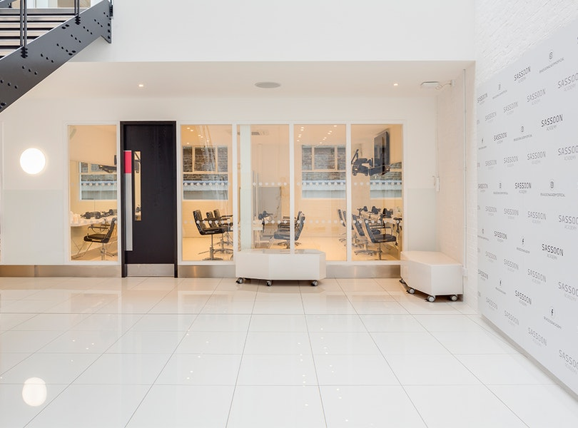
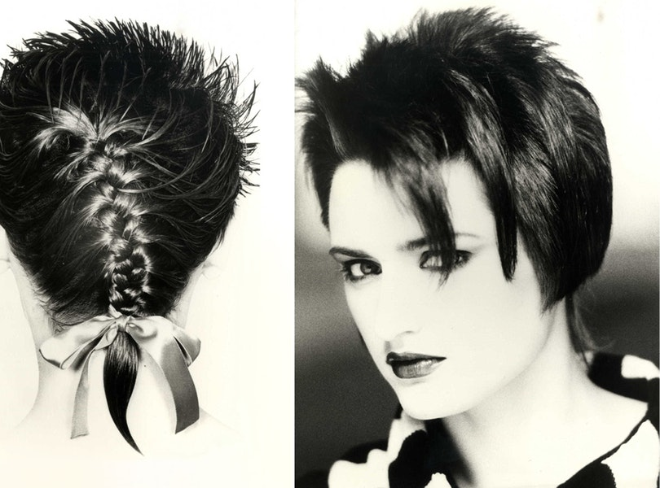
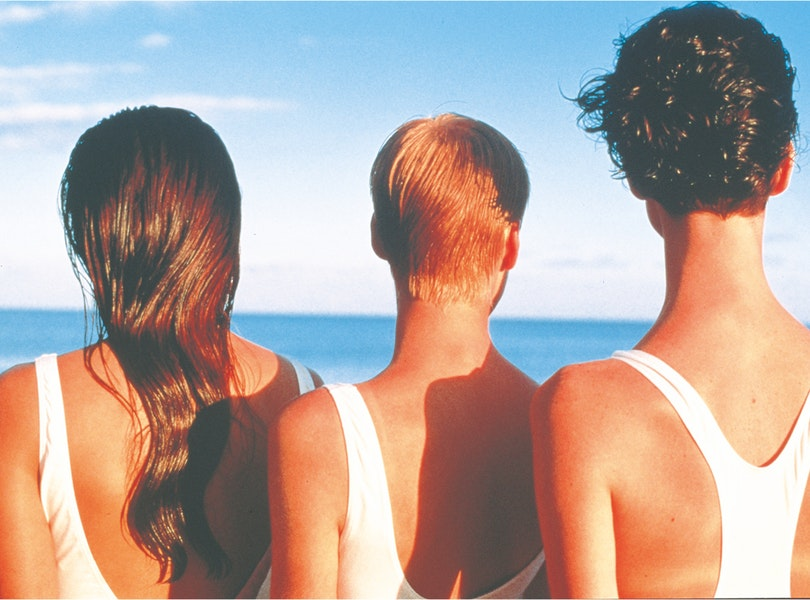
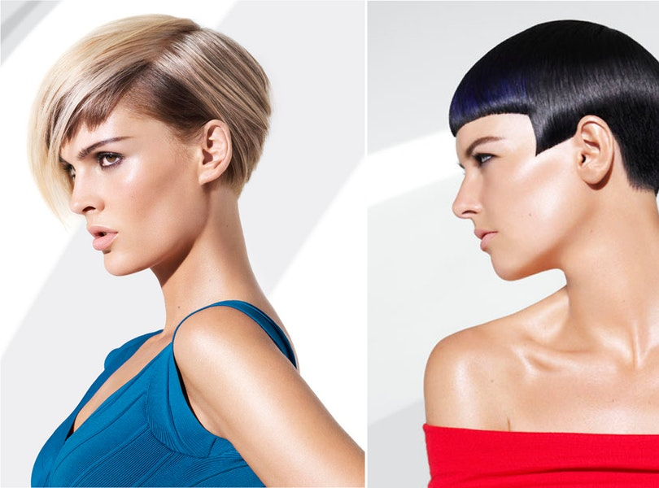
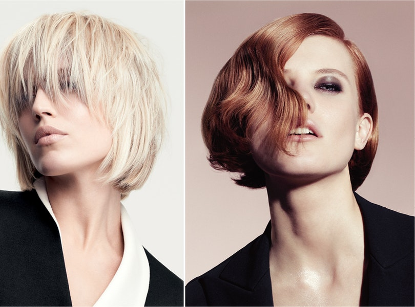

About
For over 60 years, the reputation of Sassoon Academy has been built on developing and providing world-class education at our academies and education centres around the globe. Through an unparalleled system of training that has become definitive, our instructors deliver our unique programmes with passion and professionalism, inspiring generations of hair professionals of all levels of experience.
We offer a comprehensive portfolio of courses designed to meet a variety of learning requirements in both cut and colour all completed with the coveted Sassoon Academy
We offer a comprehensive portfolio of courses designed to meet a variety of learning requirements in both cut and colour all completed with the coveted Sassoon Academy
Diploma Certificate. From our world-renowned Beginners course, the start point of thousands of successful graduates to our acclaimed weekly Creative courses and the ultimate Seasonal Masters course, alumni of Sassoon Academy are building successful careers in all areas of the global hairdressing industry.
We will ensure that not only will you gain real commercial skills from our courses; you will become part of the extended Sassoon Family and take away with you a piece of the culture that created Sassoon.
We will ensure that not only will you gain real commercial skills from our courses; you will become part of the extended Sassoon Family and take away with you a piece of the culture that created Sassoon.


1980s
By the early 1980s New Romanticism, a dramatically theatrical street style emerged in London clubs. Its adherents rejected the tribal aggression of punk by raiding history’s wardrobe dressing as nuns, fops and pierrots. Vertical punk hair was taken to the extreme and Creative Director Tim Hartley with colourist John Beeson used perming techniques and vibrant colour in the Kabuki of 1981. In the same year Mark Hayes created Toyah, the first haircut to feature an undercut fringe that was then coloured to mimic a headband. The undercut became a key technique at Sassoon in this decade as seen in the Neireid of 1983 where the hair at the sides and back was cut short with the top left long.
Annie Humphrey’s love of the Post Impressionist artists Georges Seurat inspired her Spot-Lighting and Flying Colours techniques in which colour was applied with a comb to emphasize areas of the haircut, in particular the surface, ‘spot-lighted’ in gold to make it stand out from the rest of the hair. Multi-coloured highlights using a similar pointillist technique gave a natural looking depth and tone to the hair by laying a series of subtle complementary tones of blonde next to one another, again creating depth, volume and surface shine.
Annie Humphrey’s love of the Post Impressionist artists Georges Seurat inspired her Spot-Lighting and Flying Colours techniques in which colour was applied with a comb to emphasize areas of the haircut, in particular the surface, ‘spot-lighted’ in gold to make it stand out from the rest of the hair. Multi-coloured highlights using a similar pointillist technique gave a natural looking depth and tone to the hair by laying a series of subtle complementary tones of blonde next to one another, again creating depth, volume and surface shine.
Sassoon’s mix of style and performance made it the obvious choice as official hair consultant to the athletes participating in the Los Angeles Olympic Games in 1984. Sassoon and his international team conducted months of research with 100 athletes to determine which haircuts performed best during different sporting activities. A huge campus salon was set up in the University of California to cut and care for the hair of 2,500 athletes.
As the 1980s drew on, power dressing became a key trend as more women began to enter into the executive workplace. Fashion designer Claude Montana showed sharp suits with huge shoulders that aped the male silhouette and Thierry Mugler worked with a colour palette that was both brash and bright. Sassoon’s bob made a return as its sharp, angular lines suited fashion’s more serious mood and was worn by women of all ages all over the world. Short and sharp with a clear geometric outline, the bob proved itself a timeless icon of hair design and a symbol of women’s quest for freedom. The Sassoon bob continues to be a pinnacle of cut and colour.
As the 1980s drew on, power dressing became a key trend as more women began to enter into the executive workplace. Fashion designer Claude Montana showed sharp suits with huge shoulders that aped the male silhouette and Thierry Mugler worked with a colour palette that was both brash and bright. Sassoon’s bob made a return as its sharp, angular lines suited fashion’s more serious mood and was worn by women of all ages all over the world. Short and sharp with a clear geometric outline, the bob proved itself a timeless icon of hair design and a symbol of women’s quest for freedom. The Sassoon bob continues to be a pinnacle of cut and colour.


1990s
In the early 1990s fashion underwent a dramatic change as recession hit. The eighties trappings of luxurious excess were anathema when many were calling for a change in consciousness, less ‘greed is good’, more eco-aware. In an era dubbed New Age, spirituality, sensitivity and eco-awareness found echo in fashion in the form of minimalism, a pared down style spear-headed by Rifat Ozbek’s White Collection and the Sassoon White Winter Collection both launched in 1990. A new naturalism entered hair and the experimental effects of the eighties were rejected in favour of easy-to-care for wearable, styles that found expression at Sassoon in the Natural Effects Collection of 1990. The idea of versatility pervaded fashion with many designers creating capsule collections in which clothing items could be mixed and matched in a myriad of ways saving the need to buy too much clothing at the expense of the environment. International Creative Director Tim Hartley’s Wrap cut of 1991 was a perfect fit based on Diane von Furstenberg’s classic jersey wrap dress of 1974. The hair was cut shorter through the sides and left longer on the top so that it could be ‘wrapped’ about the head in a variety of ways, an innovation further explored in the concept of Convertibles or ‘modular’ haircuts whose internal cutting and colour placement meant that the look could be changed just by parting the hair.
In the USA, Seattle spawned the freewheeling music scene of grunge and its anti-fashion aesthetic was mined by Marc Jacobs for Perry Ellis whose plaid work-wear, print tea-dresses and heavy boots photographed by Stephen Meisel for American Vogue’s Grunge and Glory shoot of 1992 were a huge influence. The Ragga aka Ragamuffin Collection of 1991 anticipated this lo-fi ramshackle look with its textured fringes, unstructured perms and layered silhouettes inspired by London street style .
The rise of Girl Power as promoted by the Spice Girls in the mid 1990s marked a change in fashion. Grunge’s natural ‘undone’ feel was supplanted by a highly charged look that combined bright body con shapes, sky-high Buffalo trainers and shorter, shiny hair. Sassoon’s Bad Girl Glamour of 1995 and Vinyl of 1998 used bold hi-shine Crazy Colour in combination with strong shapes to striking effect.
The rise of Girl Power as promoted by the Spice Girls in the mid 1990s marked a change in fashion. Grunge’s natural ‘undone’ feel was supplanted by a highly charged look that combined bright body con shapes, sky-high Buffalo trainers and shorter, shiny hair. Sassoon’s Bad Girl Glamour of 1995 and Vinyl of 1998 used bold hi-shine Crazy Colour in combination with strong shapes to striking effect.


2000s
In the 2000s luxury was lauded and reached a spectacular crescendo with the work of Alexander McQueen who brought a decadent yet melancholic excess to the catwalk and John Galliano at Dior whose magpie mix of historical and geographical references created the most opulent of fashion shows. Roland Mouret introduced a structured silhouette with the celebrated Galaxy dress of 2006, an instant best-seller, and the newly appointed Christophe Decarnin at Balmain revitalized the label with his ripped jeans and signature leather jackets with exaggerated shoulders. Hip hop, the decade’s best-selling music genre, was one of the most pervasive influences on fashion and inspired Sassoon’s Wild Style Collection of 2003. The spray-painting of American graffiti artist Futura 2000 was reimagined in fluorescent 'swooshes' of strong colour placed on cuts with clearly defined lines.
In this decade fashion celebrated diversity, individuality and customization, themes that were explored in the work of fashion anthropologist Ted Polhemus who coined the phrase, ‘the Supermarket of Style to describe modern fashion consumption.
In this decade fashion celebrated diversity, individuality and customization, themes that were explored in the work of fashion anthropologist Ted Polhemus who coined the phrase, ‘the Supermarket of Style to describe modern fashion consumption.
Polhemus saw style, like music, relying on the sampling or mixing of ‘diverse, eclectic, often contradictory elements into a unique, personal statement.’ This unique approach was used in the ? Collection where models were photographed in their own clothes in situ rather than being styled independently for the shoot.
The search for individuality coupled with many fashion designers nod to the past, particularly the 1980s, led to the acclaimed Sassoon Professional Stretch Collection of 2008 inspired by the jewel bright body con fashion of Herve Leger aka ‘The King of Cling’. As vintage clothes enjoyed a huge revival a sophisticated reinterpretation of the past could be seen in the Icon collection inspired by 1920s Hollywood featuring the body jewellery of J. Maskrey and International Creative Director Mark Hayes’ Coquette, a collection that mined the risqué underworld and moral decay of 1920s Weimar and the portraits of New Objectivity artist Christian Schad. Iconic 1920s haircuts such as the Bob and Eton Crop incorporated kiss curls drawn into rounded triangles, Clara Bow fringes, severe graduation, disconnected step panels and scalloped curves.
The search for individuality coupled with many fashion designers nod to the past, particularly the 1980s, led to the acclaimed Sassoon Professional Stretch Collection of 2008 inspired by the jewel bright body con fashion of Herve Leger aka ‘The King of Cling’. As vintage clothes enjoyed a huge revival a sophisticated reinterpretation of the past could be seen in the Icon collection inspired by 1920s Hollywood featuring the body jewellery of J. Maskrey and International Creative Director Mark Hayes’ Coquette, a collection that mined the risqué underworld and moral decay of 1920s Weimar and the portraits of New Objectivity artist Christian Schad. Iconic 1920s haircuts such as the Bob and Eton Crop incorporated kiss curls drawn into rounded triangles, Clara Bow fringes, severe graduation, disconnected step panels and scalloped curves.


2010s
The global recession had considerable effect on fashion trends with consumers eschewing fleeting fashion changes, increasingly uneasy over its modes of production, in favour of heritage brands with a backstory such as Burberry and Barbour. The high voltage fashion statements of the 2000s were superseded by a more abstract cerebral approach as seen in the pared down luxe of Phoebe Philo’s first show for Celine in 2010 which launched immaculately cut clothes in teal, grey, cream and camel. Many catwalk collections displayed a play with transparency and the optical effects of light and shade rather than the historically influenced and highly embellished collections of the early 2000s and included Bora Aksu and Erdem. This move to minimalism could be seen in the Minimum Collection of 2011 and the Optica Collection of 2014 where editorial effects were created by playing with light, depth and shadow in the cuts, colours and styling.
The Internet was the ultimate fashion environment in which global tribes congregated creating transient looks that were cast off and off with will. In 2011 Sassoon created a trilogy of collections that celebrated such hyper-individuality from the austerity of White Noise,
The Internet was the ultimate fashion environment in which global tribes congregated creating transient looks that were cast off and off with will. In 2011 Sassoon created a trilogy of collections that celebrated such hyper-individuality from the austerity of White Noise,
the cyberspace overload of Fruit through to the tweedy retrospection of Young Fogeys. The grunge revival and post-recession demand for authenticity revived rugged work-wear in particular classic American brands such as Filson, Woolrich and Pendleton; designers Marc Jacobs and Ralph Lauren incorporated the look into their menswear collections. In 2014, the 60th anniversary of Vidal Sassoon opening his first salon in London’s Bond Street, International Creative Director Mark Hayes mixed iconic 60s looks with the grunge and classic American work-wear trend in the Nu Pop and The Group Collections.
Sassoon’s fashion collaborations continued with American designer and Creative Director of Balenciaga, Alexander Wang, New York’s threeASFOUR and the London-based modernist Edeline Lee where hair was gathered into sleek, highly-glossed ponytails parted into graphic triangles to complement the juxtapositions of fabric and texture in the collection.
Sassoon’s fashion collaborations continued with American designer and Creative Director of Balenciaga, Alexander Wang, New York’s threeASFOUR and the London-based modernist Edeline Lee where hair was gathered into sleek, highly-glossed ponytails parted into graphic triangles to complement the juxtapositions of fabric and texture in the collection.
